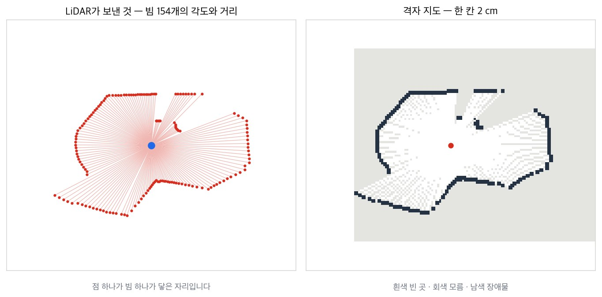
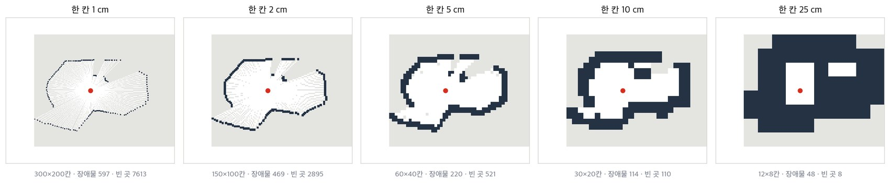
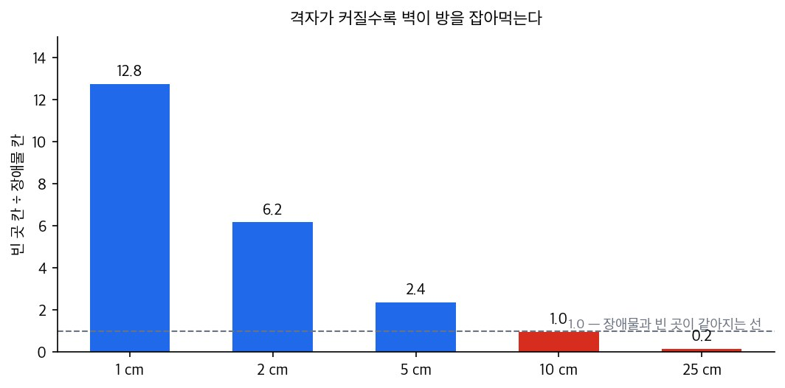
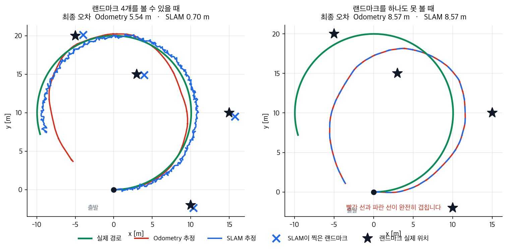
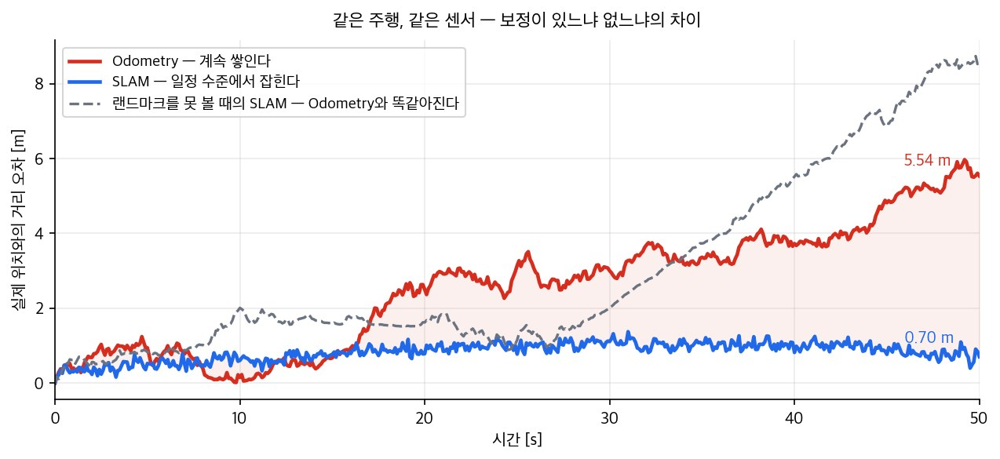

지난주에는 센서값을 보고 그 자리에서 바로 반응하는 Closed-loop Control을 다뤘습니다. 장애물이 가까워지면 멈추고, 멀어지면 다시 가는 식이었습니다. 그런데 거기에는 빠진 것이 하나 있습니다. 그 로봇은 자기가 어디를 지나왔는지 전혀 기억하지 못합니다. 같은 자리를 세 번 돌아도 세 번 다 처음 보는 곳입니다.
이번 주 주제인 SLAM은 그다음 단계입니다. 센서로 본 것을 지도로 쌓고, 그 지도를 다시 자기 위치를 아는 데 쓰는 것입니다.
이번 주는 알고리즘을 처음부터 짜지 않았습니다. PythonRobotics에 들어 있는 예제 두 개를 그대로 실행하고, 입력값을 바꿔 가며 결과가 어떻게 달라지는지를 봤습니다. 하나는 LiDAR 값으로 지도를 그리는 예제이고, 하나는 EKF-SLAM 예제입니다.
결과부터 말씀드리면, 50초 주행에서 바퀴 정보만 쓴 추정은 실제 위치에서 5.54 m 벗어났고, 같은 주행에 랜드마크 관측을 더한 SLAM은 0.70 m로 줄었습니다. 그리고 랜드마크를 하나도 못 보게 만들자 SLAM의 결과가 바퀴 정보만 쓴 것과 소수점까지 똑같아졌습니다.
먼저 비슷해 보이는 세 가지를 구분하겠습니다.
| 이름 | 이미 아는 것 | 구하려는 것 | 예 |
|---|---|---|---|
| Localization | 지도 | 내 위치 | 지도 앱에서 내 위치 점 찍기 |
| Mapping | 내 위치 | 지도 | 측량기를 정해진 자리에 놓고 실내 도면 그리기 |
| SLAM | 둘 다 모름 | 둘 다 동시에 | 처음 온 집에서 로봇청소기가 첫 청소를 할 때 |
지도를 그리려면 내가 어디 있는지 알아야 하고, 내 위치를 알려면 지도가 있어야 합니다. 둘 다 모르는데 어떻게 둘 다 구할 수 있을까요?
답은 같은 것을 여러 번, 서로 다른 자리에서 본다는 데 있습니다. 로봇이 어떤 기둥을 보고 "내 왼쪽 3 m"라고 기록합니다. 조금 이동한 뒤 같은 기둥을 다시 보고 "내 왼쪽 앞 4 m"라고 기록합니다. 기둥은 움직이지 않았으니, 이 두 관측이 동시에 맞으려면 그사이 로봇이 움직인 거리와 방향이 특정 값이어야만 합니다. 이런 조건이 관측할 때마다 하나씩 쌓이고, 쌓인 조건을 가장 잘 만족하는 답을 찾으면 로봇의 위치와 기둥의 위치가 같이 좁혀집니다.
한 번의 관측으로는 아무것도 확정되지 않습니다. 그런데 관측이 쌓이면 서로가 서로의 답을 좁혀 줍니다. 이번 실습의 EKF-SLAM은 이 과정을 칼만 필터로 처리하는 방식입니다.
| 요소 | 하는 일 | 이번 실습에서 |
|---|---|---|
| LiDAR | 빛을 쏘고 되돌아온 시간으로 주변 장애물까지의 거리를 잰다 | 한 바퀴에 빔 154개 · 0.26~1.13 m |
| Odometry | 바퀴가 얼마나 돌았는지로 내가 얼마나 움직였는지 계산한다 | 바깥을 전혀 보지 않는다 |
| Drift | Odometry 오차가 지워지지 않고 계속 더해지는 현상 | 50 m 주행에 5.54 m |
| Occupancy Grid | 공간을 네모 칸으로 잘라 칸마다 비었다·막혔다·모른다를 기록 | 한 칸 2 cm · 150×100칸 |
이 둘은 성격이 정반대입니다.
Odometry는 바깥을 보지 않습니다. 바퀴가 몇 바퀴 돌았는지만 세서 "그러면 이만큼 갔겠지"라고 계산합니다. 짧게 보면 아주 매끄럽고 끊기지 않습니다. 대신 바퀴가 한 번 미끄러지면 그 오차를 알아챌 방법이 없고, 그 틀어진 값 위에 다음 계산이 또 얹힙니다. 오차가 지워지지 않고 쌓이기만 합니다. 이것이 Drift입니다.
LiDAR는 반대입니다. 바깥 세상을 직접 보기 때문에 누적되지 않습니다. 10분 뒤에 재든 처음에 재든 벽까지 3 m면 3 m입니다. 대신 한 번 잴 때마다 값이 조금씩 흔들리고, 비슷하게 생긴 곳이 여럿이면 어디를 보고 있는지 헷갈립니다.
그래서 SLAM은 이 둘을 합칩니다. 쌓이지만 매끄러운 쪽과, 흔들리지만 쌓이지 않는 쪽을 같이 쓰는 것입니다.
| 단계 | 무엇을 하는가 | 쓰는 입력 |
|---|---|---|
| Prediction | 바퀴가 이만큼 돌았으니 지금쯤 여기 있겠다고 먼저 찍는다 | Odometry |
| Observation | 지금 자리에서 실제로 주변을 잰다 | LiDAR · 랜드마크 |
| Correction | 찍어 둔 자리에서 보여야 할 모습과 실제로 본 모습의 차이만큼 위치를 끌어당긴다 | 둘의 차이 |
| Map Update | 보정된 위치를 기준으로 지도에 새로 본 것을 기록한다 | 보정된 위치 |
네 단계 중 SLAM을 SLAM으로 만드는 것은 세 번째입니다. Prediction만 반복하면 그게 바로 Odometry이고, 오차가 그대로 쌓입니다. Correction이 들어가야 쌓인 오차가 깎입니다. 뒤에서 이 말이 숫자로 맞는지 확인합니다.
첫 번째 실습은 LiDAR 측정값을 격자 지도로 바꾸는 예제입니다. 들어가는 값은 아주 단순합니다. 각도와 거리가 짝지어진 숫자 154개가 전부입니다. 실제 실내를 한 바퀴 스캔한 값이고, 가장 가까운 것이 0.26 m, 가장 먼 것이 1.13 m입니다.

왼쪽이 센서가 보내온 그대로입니다. 가운데 파란 점이 로봇이고, 거기서 뻗은 연한 선 하나가 빔 하나, 선 끝의 빨간 점이 그 빔이 무언가에 닿은 자리입니다.
오른쪽이 이것을 격자로 바꾼 것입니다. 규칙은 두 줄로 끝납니다.
| 그 칸에서 일어난 일 | 지도에 적는 값 | 색 |
|---|---|---|
| 빔이 그냥 지나갔다 | 비어 있음 | 흰색 |
| 빔이 여기서 멈췄다 | 막혀 있음 | 남색 |
| 빔이 한 번도 안 지나갔다 | 모름 | 회색 |
제가 눈여겨본 것은 세 번째 줄입니다. 지도를 만들 때 쓰는 정보는 "무엇이 있더라"만이 아닙니다. 빔이 아무것도 못 만나고 지나간 길도 똑같이 중요한 정보입니다. 그 길이 있어야 "여기는 지나갈 수 있다"가 성립하기 때문입니다. 그리고 빔이 간 적이 없는 칸은 비어 있는 것이 아니라 모르는 칸으로 남습니다.
영상에서는 회색이 줄어드는 속도를 봐 주시면 됩니다. 빔이 한 번 지나갈 때마다 그 선을 따라 길쭉하게 흰색이 뚫립니다. 빔 사이사이에는 회색이 남아 있다가, 다음 빔이 그 틈을 지나가면서 조금씩 메워집니다.
154개를 다 넣고 나면 2 cm 격자에서 장애물 469칸, 빈 곳 2,895칸, 모름 11,636칸이 됩니다. 한 자리에서 한 번 돌아본 것으로는 전체 칸의 22%밖에 못 채웁니다. 나머지는 벽 뒤쪽처럼 빔이 닿을 수 없는 곳입니다. 한 자리에서는 아무리 좋은 센서를 써도 가려진 곳을 볼 수 없습니다. 나머지를 채우려면 로봇이 돌아다녀야 합니다.
같은 스캔 데이터를 그대로 두고 격자 한 칸의 크기만 1 cm부터 25 cm까지 바꿔서 다섯 번 돌렸습니다.

| 한 칸 | 격자 크기 | 전체 칸 | 장애물 칸 | 빈 곳 칸 | 빈 곳 ÷ 장애물 | 메모리 |
|---|---|---|---|---|---|---|
| 1 cm | 300×200 | 60,000 | 597 | 7,613 | 12.8 | 58.6 KB |
| 2 cm | 150×100 | 15,000 | 469 | 2,895 | 6.2 | 14.6 KB |
| 5 cm | 60×40 | 2,400 | 220 | 521 | 2.4 | 2.3 KB |
| 10 cm | 30×20 | 600 | 114 | 110 | 0.96 | 0.6 KB |
| 25 cm | 12×8 | 96 | 48 | 8 | 0.17 | 0.1 KB |
1 cm 격자에서는 빈 곳이 장애물보다 12.8배 많습니다. 방 안이 넓게 뚫려 있다는 뜻입니다. 그런데 25 cm 격자에서는 뒤집힙니다. 빈 곳이 장애물의 0.17배, 즉 장애물 칸이 여섯 배 더 많습니다. 같은 방을 재서 만든 지도인데 거의 전부가 벽인 지도가 된 것입니다.

왜 이렇게 되는지는 코드가 칸을 칠하는 방식에 있습니다. 이 예제는 빔이 닿은 지점 하나만 칠하는 것이 아니라 그 자리와 옆·위·대각선까지 네 칸을 막혔다고 표시합니다. 벽이 항상 두 칸 두께로 그려지는 것입니다.
두 칸은 1 cm 격자에서는 2 cm짜리 선이지만, 25 cm 격자에서는 50 cm짜리 덩어리입니다. 지름 2 m쯤 되는 방에 50 cm 두께의 벽을 그리면 방 안쪽이 거의 남지 않습니다. FIG 02의 맨 오른쪽에서 흰색이 두 조각밖에 안 남은 것이 그 결과입니다.
그러니까 해상도를 정하는 일은 지도를 얼마나 곱게 그릴까의 문제가 아니었습니다. 로봇이 지나갈 수 있느냐가 걸린 문제입니다. 경로를 찾는 알고리즘은 지도에 흰 칸이 이어져 있어야 길을 냅니다. 격자를 키우면 실제로는 지나갈 수 있는 틈이 지도에서는 막힌 것으로 보여서, 로봇은 갈 수 있는 길을 두고 못 간다고 판단합니다.
반대로 격자를 무작정 줄일 수도 없습니다. 1 cm로 가면 칸 수가 60,000개로 늘고 메모리도 58.6 KB가 됩니다. 이 실습은 지름 2 m짜리 방 하나였는데도 그렇습니다. 집 한 채나 사무실 한 층을 1 cm로 만들면 감당하기 어려워집니다. 참고로 ROS 내비게이션에서 쓰는 격자 지도의 기본값이 5 cm인데, 이 표에서 5 cm는 비율 2.4로 아직 길이 넉넉히 남아 있으면서 메모리는 2.3 KB로 가벼운 지점입니다. 실내 로봇이 대체로 이 근처를 씁니다.
두 번째 실습은 EKF-SLAM 예제입니다. 로봇이 1 m/s로 50초 동안 원을 그리며 50 m를 달리고, 주변에는 랜드마크 네 개가 흩어져 있습니다. 로봇은 랜드마크가 어디 있는지 미리 모르고, 사거리 20 m 안에 들어오면 거리와 방향을 잴 수 있습니다. 측정값에도 바퀴 명령에도 노이즈가 섞여 있습니다.
한 번의 주행에서 세 가지를 동시에 기록했습니다.
| 선 | 무엇인가 | 로봇이 알 수 있는 값인가 |
|---|---|---|
| 초록 — 실제 경로 | 로봇이 진짜로 지나간 자리 | 모름 · 시뮬레이터만 아는 정답 |
| 빨강 — Odometry 추정 | 바퀴 정보만 적분한 결과 | 알 수 있음 |
| 파랑 — SLAM 추정 | 거기에 랜드마크 관측으로 보정을 더한 결과 | 알 수 있음 |
이 영상은 두 군데를 보시면 됩니다.
첫째, 왼쪽에서 빨간 선이 초록 선에서 떨어져 나가는 순간입니다. 출발 직후에는 세 선이 거의 붙어 있습니다. 그런데 15초쯤부터 빨간 선이 안쪽으로 휘기 시작하고, 한 번 벌어진 뒤로는 다시 붙지 않습니다. 되돌아올 방법이 없기 때문입니다. 파란 선은 그 와중에도 초록 선을 따라갑니다.
둘째, 파란 ✕ 표시가 별에 가까워지는 과정입니다. 처음 보는 랜드마크는 엉뚱한 자리에 찍히지만, 로봇이 이동하면서 같은 랜드마크를 다른 각도에서 다시 보면 조금씩 제자리를 찾아갑니다. 1번 절에서 말한 "관측이 쌓이면 서로가 서로를 좁혀 준다"가 눈에 보이는 부분입니다.

왼쪽 그림에서 파란 선은 초록 선을 거의 덮고 있고, 빨간 선만 안쪽으로 크게 휘어 나갔습니다. 랜드마크도 네 개를 전부 찾아서 지도에 등록했고, 찍은 위치와 실제 위치의 차이는 평균 0.82 m였습니다.
| 50초 · 50 m 주행 | Odometry | SLAM | 차이 |
|---|---|---|---|
| 도착했을 때의 오차 | 5.54 m | 0.70 m | 8배 |
| 50초 내내의 평균 오차 | 2.54 m | 0.83 m | 3배 |
| 가장 많이 벌어졌을 때 | 5.97 m | 1.37 m | 4배 |
| 랜드마크를 못 볼 때 | 8.57 m | 8.57 m | 차이 없음 |

두 선은 크기도 다르지만 모양이 다릅니다. 빨간 선은 계속 오른쪽 위로 올라갑니다. 중간에 잠깐 내려가는 구간이 있지만 그건 우연히 오차가 상쇄된 것이고, 전체적으로는 멈추지 않고 커집니다. 파란 선은 올라가지 않고 1 m 안쪽에서 계속 출렁입니다.
이 차이는 두 방식이 오차를 다루는 방법이 다르기 때문입니다. Odometry는 매 순간의 추정에 그다음 이동량을 더하기만 합니다. 틀린 값 위에 다음 값을 얹으니 한 번 생긴 오차를 지울 기회가 영영 없습니다. SLAM은 매 순간 "내가 지금 여기 있다면 저 랜드마크는 이 방향 이 거리에 보여야 한다"를 계산하고, 실제로 본 것과 비교합니다. 둘이 어긋나면 그만큼 추정 위치를 끌어당깁니다. 그래서 오차가 커지려고 할 때마다 다시 깎입니다.
그런데 이 설명이 맞는지 확인하려면, 보정할 거리를 없애 보면 됩니다. 그래서 랜드마크를 전부 사거리 밖으로 치우고 똑같은 주행을 다시 돌렸습니다. 알고리즘도 노이즈도 전부 그대로이고, 관측만 0이 됩니다.
결과는 최종 오차 8.57 m, 평균 2.99 m였습니다. 그런데 눈에 띈 것은 그 숫자가 아니었습니다. SLAM의 값과 Odometry의 값이 완전히 같았습니다. 최종도 평균도 최대도 소수점까지 똑같습니다. FIG 04 오른쪽에서 빨간 선이 안 보이는 이유도 파란 선 밑에 정확히 깔려 있기 때문입니다.
즉 SLAM의 정확도를 만든 것은 밖에서 들어온 관측입니다. EKF 수식은 두 경우에 똑같이 돌아갔습니다. 바뀐 것은 밖에서 들어온 정보뿐이고, 그것이 없자 SLAM은 그냥 Odometry가 되었습니다. 3번 절에서 "Prediction만 반복하면 그게 Odometry"라고 적은 것이 숫자로 확인된 셈입니다.
테미 같은 안내 로봇이나 로봇청소기는 공장에서 나올 때 자기가 어느 건물에 놓일지 모릅니다. 미리 넣어 줄 지도가 없습니다. 그래서 설치하고 처음 켰을 때 한 바퀴 돌면서 지도를 직접 만들고, 그 지도를 저장합니다. 이 첫 한 바퀴가 SLAM입니다.
그다음부터는 지도가 이미 있으니 SLAM 전체를 돌릴 필요가 없습니다. 저장된 지도 위에서 내가 어디 있는지만 찾으면 됩니다. 이것이 다음 주 주제인 Localization이고, 계산이 훨씬 가볍습니다.
지도가 있어야 비로소 성립하는 기능들도 있습니다.
| 기능 | 지도가 없으면 |
|---|---|
| "3번 회의실로 가 줘" | 3번 회의실이 어느 좌표인지 가리킬 수가 없다 |
| 금지 구역 설정 | 사용자가 선을 그을 바탕 그림이 없다 |
| 방별로 나눠서 청소 | 방이라는 구분 자체가 지도 위에서만 생긴다 |
| 충전독으로 복귀 | 충전독 위치를 기억해 둘 좌표계가 없다 |
그리고 이번 실습의 숫자가 왜 바퀴만으로는 안 되는지 보여 줍니다. 50 m 주행에 5.54 m가 틀어졌습니다. 집 한 바퀴가 대략 그 정도 거리입니다. 로봇이 거실에 있다고 믿는데 실제로는 5 m 떨어진 다른 방에 있으면, 저장해 둔 지도와 자기 위치가 어긋나서 지도가 있어도 쓸모가 없어집니다. 그래서 주행 중에도 계속 주변을 보면서 위치를 다시 맞춰야 합니다.
지난주 마지막 실험에서, 거울 앞에 선 로봇은 눈앞의 판을 아예 보고하지 못했습니다. 빛이 돌아오지 않으면 그 센서에게는 없는 것과 같다는 결론이었습니다.
이번 주 내용을 알고 나니 그 문제가 SLAM에서는 더 나빠진다는 것이 보입니다. 이유가 두 가지입니다.
첫째, 지도에 구멍이 남습니다. 거울 쪽으로 간 빔은 돌아오지 않으니 그 방향은 끝까지 모르는 칸으로 남거나, 더 나쁘게는 빔이 멀리까지 간 것으로 처리되어 벽 너머까지 비어 있다고 기록됩니다. 실습 A에서 본 세 가지 값 중 "모름"을 따로 두는 이유가 여기서 더 분명해집니다. 돌아온 것이 없을 때 그것을 "비었다"로 적어 버리면, 지도가 틀린 채로 저장되고 그 뒤의 모든 경로 계획이 그 위에서 돌아갑니다.
둘째, 거울에 비친 상이 가짜 랜드마크로 등록될 수 있습니다. 실습 B에서 봤듯이 SLAM의 보정은 "기억하는 랜드마크가 지금 여기 보여야 한다"는 계산에서 나옵니다. 그 기억 자체가 거울 속 허상이면, 보정이 오히려 로봇을 틀린 방향으로 끌어당깁니다. 관측이 없는 것보다 틀린 관측이 더 위험한 경우입니다.
지난주에는 "센서를 한 종류만 쓰면 안 된다"가 결론이었는데, 이번 주에는 거기에 하나가 붙습니다. SLAM에서는 틀린 관측을 걸러내는 일까지 해야 한다는 것입니다. 이번 EKF-SLAM 예제도 새로 본 랜드마크를 무조건 등록하지 않고, 기존에 알던 것과 얼마나 떨어져 있는지를 따져 보고 결정합니다.
이번 주에는 SLAM을 직접 구현하지 않고, 이미 만들어진 예제 두 개의 입력을 바꿔 가며 결과를 비교했습니다. 숫자로 확인한 것이 세 가지 있습니다.
격자 지도에 기록되는 값은 두 가지가 아니었습니다. 비었다·막혔다에 모른다까지 세 가지입니다. 그리고 "비었다"는 빔이 실제로 그 칸을 통과했을 때만 생깁니다. 장애물이 안 보였다고 해서 비었다고 적지 않습니다. 한 자리에서 한 바퀴 스캔해서는 전체 칸의 22%밖에 못 채웠습니다. 로봇이 돌아다녀야 하는 이유가 여기 있습니다.
격자를 키우면 지도가 거칠어지는 것으로 끝나지 않습니다. 벽 두께가 같이 커지면서 지나갈 수 있는 길이 지도에서 사라집니다. 같은 방을 1 cm로 그리면 빈 곳이 장애물의 12.8배인데 25 cm로 그리면 0.17배가 됐습니다. 10 cm 부근에서 이 비율이 1.0을 지나갑니다. 해상도는 메모리와 길의 맞바꿈이고, 로봇의 폭을 기준으로 정해야 합니다.
같은 주행에서 Odometry는 5.54 m, SLAM은 0.70 m였습니다. 그런데 랜드마크를 전부 사거리 밖으로 치우자 SLAM의 결과가 Odometry와 소수점까지 똑같아졌습니다. EKF 수식은 그대로 돌아갔는데도 그렇습니다. 바깥에서 들어오는 정보가 없으면 보정할 것이 없고, 그러면 SLAM은 그냥 Odometry입니다.
이번 실습 A는 한 자리에서 찍은 스캔 한 장이었습니다. 로봇이 이동하면서 찍은 여러 장을 하나의 지도로 합치려면 각 스캔을 찍은 위치를 알아야 하는데, 그 위치가 실습 B에서 본 것처럼 틀어져 있습니다. 틀어진 위치로 쌓은 지도가 얼마나 망가지는지를 다음에 직접 돌려 보고 싶습니다. 또 지난주 거울처럼 반사가 이상한 면을 넣었을 때 가짜 랜드마크가 실제로 등록되는지, 그리고 예제에 들어 있는 거르는 기준이 그것을 막아 주는지도 확인해 보려 합니다.